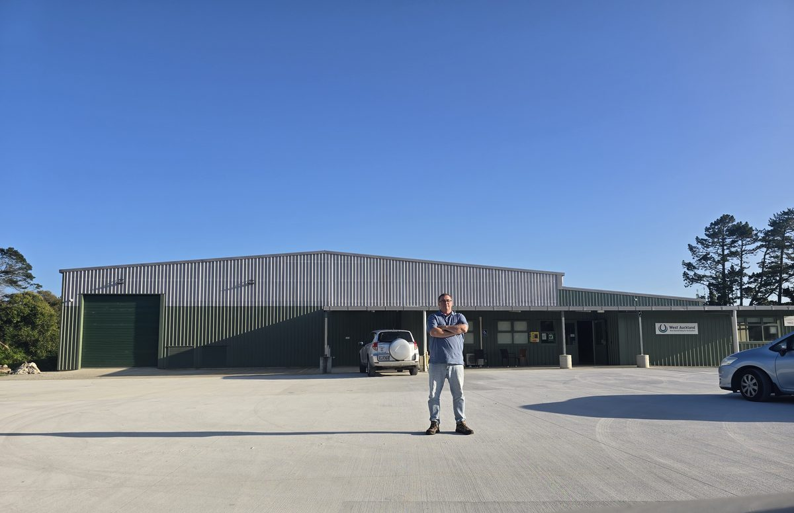

ACTIVE
PROJECT
MANAGEMENT
We don't manage from a desk. Brett Archer is on site, across every detail, and directly contactable throughout your project. Residential, commercial, civil and community.
On Site.
Every Time.
Green Zebra gets your project built. Brett Archer manages everything: consents, contractors, council, procurement, and the appointment and management of architects, engineers and other professionals. From day one through to CCC sign-off. One person. One number. No gaps.
Brett has spent 30+ years managing construction and development projects across Auckland. Not from a boardroom. Not via email chains. On site, across every trade, and directly contactable throughout.
Green Zebra works with property developers, private owners, body corporates, community organisations, education providers and local government, from a single apartment refurbishment to programmes managing construction valued at $300M+. Whatever the scale, the commitment is the same: delivered to scope, on time and on budget.
Full Lifecycle Management
Green Zebra manages the full development and construction lifecycle, from the first consent strategy through to CCC sign-off and handover. Six core service areas, one person managing all of it. Download our one-page capability profiles.
Project Delivery
We plan, procure and manage projects from the first brief through to handover, keeping scope, cost and programme under control.
- Project and programme management
- Design and build procurement (RFT/RFP)
- Engineer to the contract
- Budget, contract and variation management
- Professional team appointment and coordination
- Progress payment certification
- Funding applications and funder engagement for community projects
Construction & Refurbishment
We deliver new builds, refurbishments, fit-outs and upgrades across residential, commercial and industrial property, coordinating the trades, budgets and programmes through to completion.
- Residential and commercial new build
- Building refurbishment and fit-out
- Industrial plant installation and civil works
- Residential refurbishment, for sale and for rental
- Insurance remediation and repair works
- Upgrading and preparing properties to improve presentation, function, compliance and value
- Coordination of trades, budgets, programmes and completion works
Consenting, Building Compliance & Resolution
We plan and manage resource and building consents, and resolve compliance problems on existing buildings, taking the work through to council sign-off.
- Resource consent strategy, planning and management
- Building consent management through to CCC sign-off
- Auckland Council compliance and statutory obligations
- Certificates of Acceptance and unconsented work advice
- Council information requests and Notices to Fix
- Managing remedial work to resolve compliance issues
Planning & Asset Management
We prepare asset management plans, 10-year property plans and long-term maintenance plans that help owners budget for and prioritise the work their buildings need.
- 10-year property planning (10YPP)
- Asset management plans
- Maintenance planning and scheduling
- Long-term Maintenance Plans (Unit Titles Act 2010)
- Total cost of ownership planning
- Sustainability and environmental scoping
Property Management
We act as the landlord’s representative for property owners, looking after tenancies, repairs, upgrades and maintenance schedules.
- Landlord’s representative for property owners
- Tenancy and lease administration
- Tenant liaison and follow-up
- Attending body corporate meetings for owners
- Arranging quotes, repairs and upgrades
- Building maintenance and compliance schedules
Landscape Architectural Design
Brett holds a Bachelor of Landscape Architecture and applies landscape design alongside our project work, from concept to construction. It is offered with our project management services, not as a standalone landscape practice.
- Landscape concept design
- Park and garden design, residential and commercial
- External works and site planning
- Planting and soft landscape design
- Playground design and construction, including early childhood settings
- Playground upgrades and refurbishment
- Coordination of landscape works with construction
Selected Projects
From a single apartment refurbishment to construction programmes valued at $300M+, every project is managed end to end by Brett as the single point of contact.
Redevelopment of the former Hobsonville Air Base into a superyacht and marine industry precinct, including 100,000m² of industrial buildings, 15,000m² of mixed-use office space and vessel launching systems. Led the resource consent strategy across multiple agencies and procured the professional team.
Outcome: Consents for the marine infrastructure and marina were obtained through Environment Court and planning hearings. A very complex consenting process.
Waterfront master plan for Auckland City Council, including marina expansion, reclamation, seawall extensions and lifting bridges.
Role: Member of the project team. Contributed to the resource consent strategy covering 12 separate consents, the international EOI/RFP procurement of the multi-disciplinary design team, and the feasibility and costing studies.
Annual construction, refurbishment and relocation programmes on a live campus, with 25-70 projects a year and 640+ staff relocations. Includes the Waitakere City Library joint venture ($36M, three multi-storey buildings), an NZ Institute of Architects Award-winning building, a veterinary hospital and a student learning complex.
Outcome: Minor capital works completed every year on time and within budget. Each year covered multiple projects, consultants and contractors.
Preparing, reviewing, coordinating and implementing Long-term Maintenance Plans under the New Zealand Unit Titles Act 2010. This is practical property and project management work: planning future maintenance, budgeting, prioritising works, coordinating consultants and contractors, and managing delivery.
Refurbishment of a leaky apartment building, including weathertightness remediation, building envelope repairs and reinstatement works, managed through to completion.
Full 10-year property plan across 134 classrooms. Delivered a dance studio, 22 science labs, gym upgrade, reroofing, sportsfields, power infrastructure and carpark, all procured and delivered to Ministry of Education requirements.
New covered arena, stables, civil road upgrade, dry ponds, carpark, water jump and cross-country course. D&B procurement, resource consent, building consent and engineer to the contract. Solar and environmental scoping included.
Planning: Also wrote an asset management plan and a long-term maintenance plan for West Auckland Riding for the Disabled.
Design and construction of a new preschool playground, delivered from concept through to construction.
Complex industrial upgrade including structural review, HV electrical reticulation, fire compliance, drainage, resource consent for new tanks, and full refurbishment of a three-storey office block.
High-end residential refurbishment on Marine Parade, Herne Bay, including heritage-sensitive upgrades and a full interior and exterior renovation.
Full refurbishment of two apartments, including new bathrooms and kitchens, electrical and plumbing upgrades, and polished concrete floors. Completed within a 20-day turnaround.
Pre-sale refurbishment including weatherboard repairs, a new kitchen and bathroom, and a full interior and exterior repaint. Completed within a 30-day turnaround.
Full house refurbishment including exterior repairs, roof works, a new kitchen and bathroom, and a complete downstairs upgrade. Brett managed all trades directly.
Our residential work includes heritage-sensitive and high-end refurbishments, insurance remediation and repair works, rental property refurbishments, and rapid-turnaround projects that plan, coordinate, procure and deliver within tight timeframes while keeping quality and cost under control.
Practical. Direct. Accountable.
Green Zebra works directly with clients: no layers, no hand-offs, no confusion about who is responsible for what. Every engagement follows the same disciplined process regardless of scale.
01. Scope & Feasibility
Establish what is possible, what it will cost, and what risks need managing before you commit. No surprises later.
02. Team & Procurement
Brett appoints and contracts the right consultants, contractors and specialists for your project. You get a vetted team, not whoever was available.
03. Consents & Compliance
Resource consents, building consents, council coordination and statutory obligations managed entirely by Brett. You do not need to learn the system.
04. Construction Delivery
On-site presence, direct contractor management, budget and variation control, and progress payment certification throughout the build.
05. Handover & Sign-off
CCC, final inspections, and a project closed out properly, not just abandoned when the last trade leaves. Clear communication at every stage.
The Right Team for Each Project
We work with a broad network of trusted consultants and contractors, including architects, planners, engineers, quantity surveyors, specialist consultants, main contractors and subcontractors. This lets us assemble and manage the right project team for each job, based on the scope, complexity, budget, programme and technical requirements of the project.
We are not tied to one consultant or contractor team. We select the most suitable people for each project, coordinate them effectively, and manage the overall team on the client’s behalf.
The Difference
Most project managers manage from a desk. Brett manages from the site. Here is what that means for your project.
One Call. One Person. No Gaps.
You get Brett's direct number and Brett answers it. No account manager, no junior who needs to check with someone, no dropped ball between hand-offs. One person knows every detail of your project from day one to handover.
Problems Caught Before They Cost You
30 years of hands-on delivery means Brett has seen nearly every situation that can go wrong on a construction project, and knows how to get ahead of it before it becomes a variation, a delay or a dispute.
No Nasty Surprises on Cost
Tight budget management, rigorous variation control and progress payment oversight mean you always know where your money is going. 900+ projects managed with tight cost control is not luck. It is process.
Consents Handled. Properly.
Resource consents, building consents, Auckland Council compliance, CCC sign-off. Brett manages all of it. You do not need to learn the system, chase council or wonder what is happening. It is handled.
Straight Advice. Not Hedged Advice.
Brett gives you his honest read on the project: what is achievable, what is risky, and what he would do if it were his money. No jargon, no liability hedging, no fluff.
Capability Profiles
One-page summaries you can save or forward. Start with the company overview, or pick the area that matches your project.
Ready to Talk?
Planning a new build, a refurbishment or a civil works package? Give Brett a call or send an email. Straight talk, no obligation.